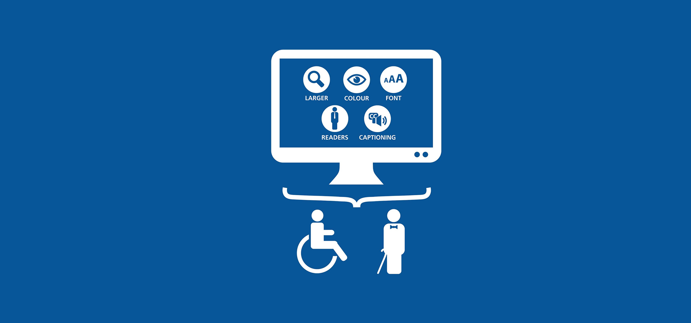

Acessibilidade em web
O que é acessibilidade web e qual é a sua importância?
 Segundo o
portal Web Accessibility Initiative
(WAI),que pertence ao World Wide Web Consortium (W3C),
organização responsável por criar e gerenciar os padrões da web,
esse ambiente digital no qual navegamos foi feito para todas as pessoas.
Isso independe do seu hardware, software, idioma, localização ou habilidades.
Segundo o
portal Web Accessibility Initiative
(WAI),que pertence ao World Wide Web Consortium (W3C),
organização responsável por criar e gerenciar os padrões da web,
esse ambiente digital no qual navegamos foi feito para todas as pessoas.
Isso independe do seu hardware, software, idioma, localização ou habilidades.
Ou seja, a acessibilidade web envolve a preocupação tanto com pessoas que tenham alguma deficiência
(auditiva,
visual, de fala, física, neurológica, cognitiva etc.) quanto com usuários que se enquadram em casos
como
estes:
- pessoas com dificuldades devido à idade;
- pessoas que acessam a internet de dispositivos móveis com tela muito pequena;
- pessoas com conexão lenta à internet;
- pessoas com plano de dados muito limitado de acesso à internet.
Logo, se considerarmos que todos devem ter o direito de consumir as informações disponíveis publicamente nos sites que você vier a desenvolver, é fundamental ter a acessibilidade em mente. A ideia é que nenhum indivíduo seja excluído devido a uma deficiência ou qualquer outra condição.
Qual é o papel do desenvolvedor na acessibilidade?
Já que o dev é uma das figuras-chave no que se refere a transformar o projeto de um sistema em
realidade,
é de se esperar que ele se interesse pelo sucesso do site. Como isso é resultado de usuários
satisfeitos,
que têm uma experiência agradável independentemente de suas necessidades, é fundamental que o
desenvolvedor
também seja responsável por proporcionar a acessibilidade.
Para isso, é preciso ter em mente os princípios por trás dela e os meios de implementá-la, como você
confere
a
seguir.
Quais são os princípios da acessibilidade web?

Ainda de acordo com a Web Accessibility Initiative,
a acessibilidade web segue uma série de princípios,
dos quais podemos destacar 4 principais. Confira cada um deles a seguir.
Perceptível
O primeiro princípio diz respeito às possibilidades de o usuário identificar o conteúdo e a interface por meio dos sentidos. Se uma pessoa não tiver a capacidade de ver, por exemplo, terá a alternativa de usar um leitor de tela para perceber os elementos do site com o auxílio de indicações sonoras.
Operável
O conceito de operável está relacionado ao uso de recursos interativos,
para de fato navegar em um site ou sistema web. Isso envolve clicar, arrastar,
tocar, teclar ou usar comandos de voz
Esses são os métodos mais conhecidos, mas podemos considerar outros, desde que ofereçam o controle para
o
usuário.
Compreensível
Um sistema ou tecnologia compreensível precisa garantir que o conteúdo seja legível (não só visualmente, mas também por um leitor de tela, por exemplo) e simples de entender. A interface também deve seguir esse princípio, de modo que seja fácil e siga boas práticas de UX design, além de ter comportamentos previsíveis, que não distraiam o usuário com erros ou resultados inesperados.
Robusto
No contexto da acessibilidade web, um site robusto é aquele que é compatível com diferentes navegadores, soluções assistivas ou qualquer agente que o usuário possa vir a utilizar para acessar aquela aplicação. Isso quer dizer que, não importa qual tecnologia o usuário escolher — desde que seja apropriada para aquela finalidade —, o sistema deve funcionar.